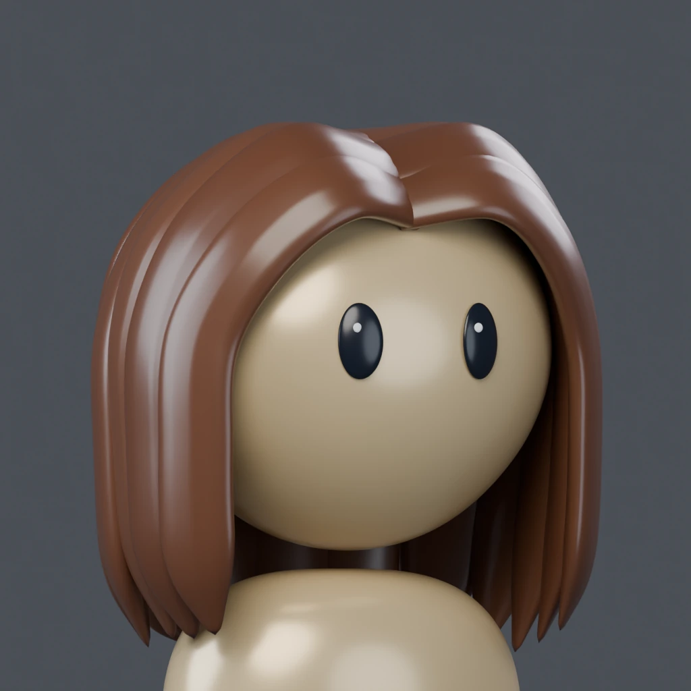
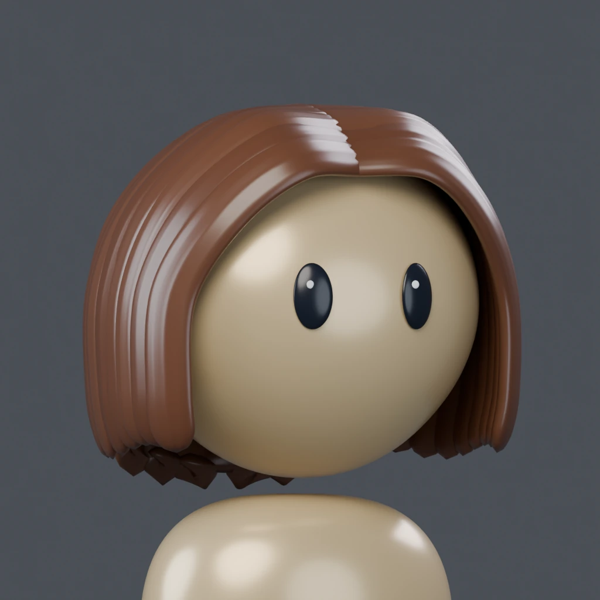
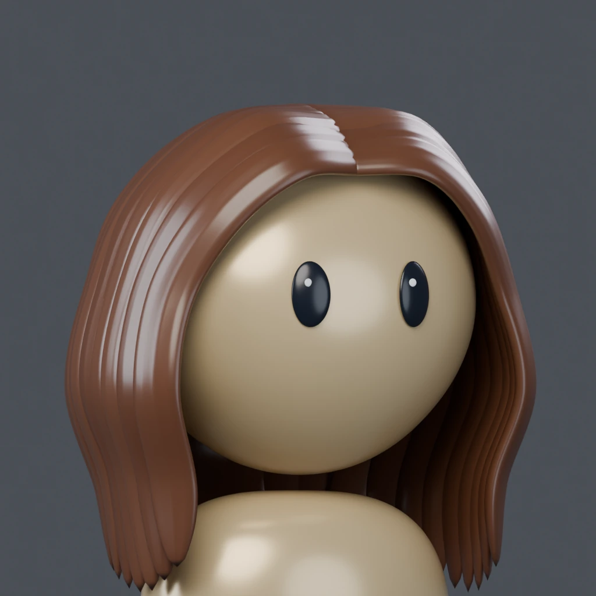
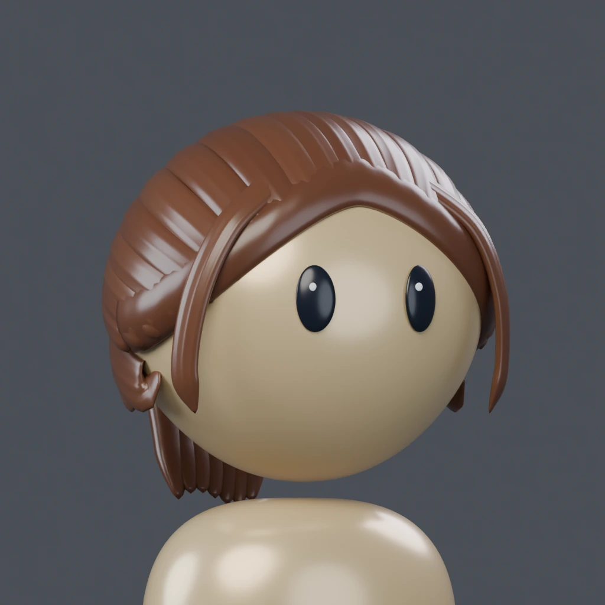
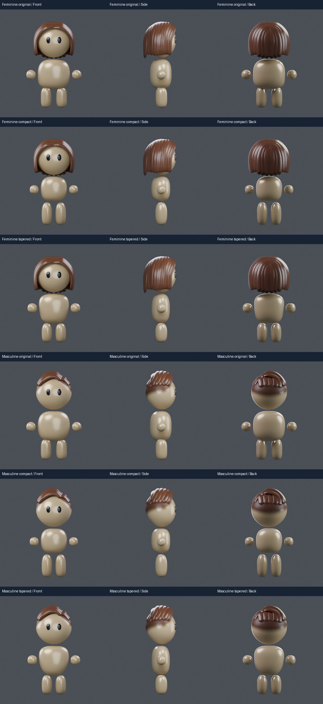
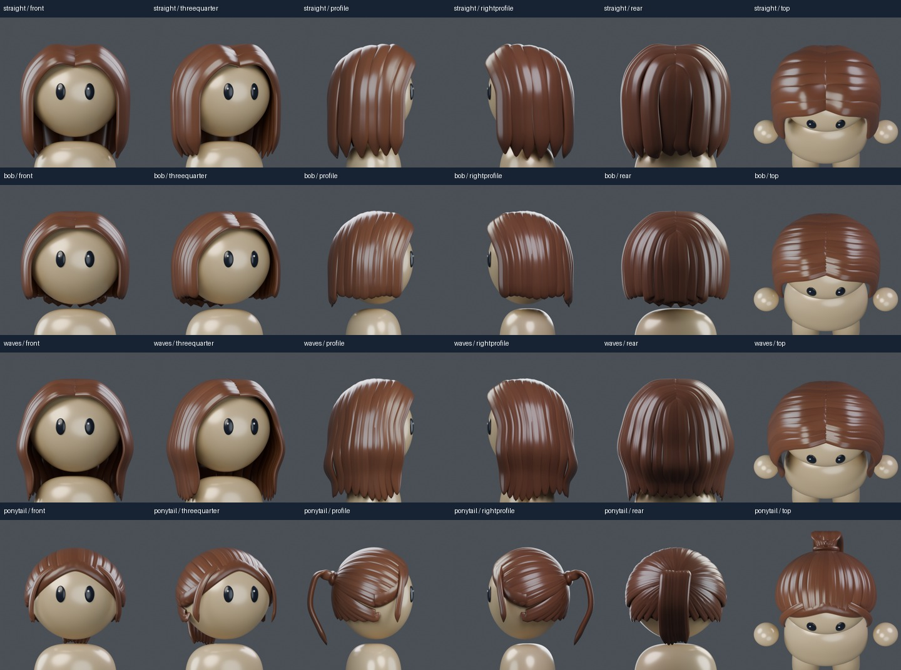
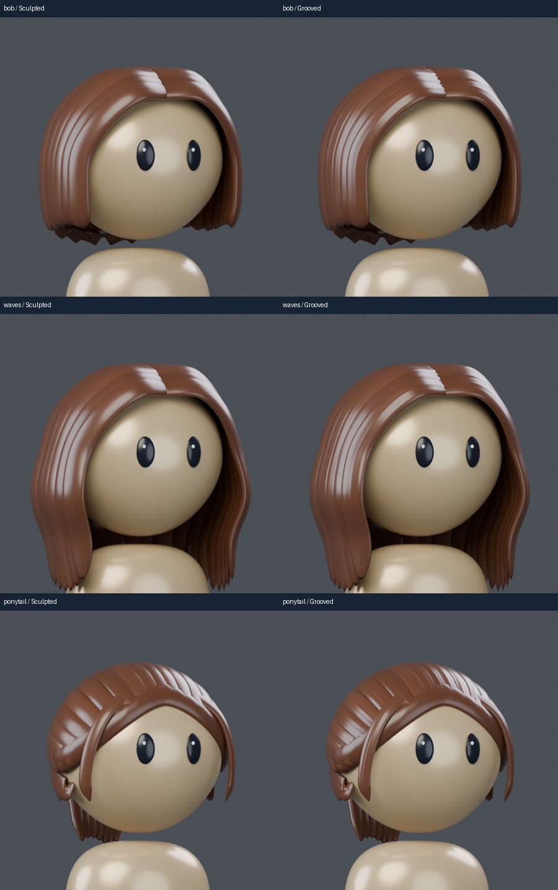

CARTOON EXPLORATION · 156Hair and body options
The rounded head and eyes are exactly from154. Compare three new women’s hairstyles and two alternate bodies against the current versions. These are separate experiments; your main avatars and Studio are preserved.
Drag to rotate. Pinch or scroll to zoom; Face focus brings the face closer. The old model stays visible while a new choice loads. Each component is cached after its first load.
For a fair comparison, change one selector at a time. The hair surface changes actual carved geometry; the finish changes its sheen. Polished is the intended look. Skin colors remain the accepted151 set.
Women’s hair

Straight · control
The154 cut, retained for comparison.
Bob
Shorter jaw-length curtain, overlapping part roots and rounded sculpted locks.
Waves
Longer sections with gentle S bends and carved lock detail.
Ponytail
Swept scalp sections, a gathered tail and two face-framing locks.Body comparison
Original preserves154. Compact shortens and rounds the torso and brings the hands in. Tapered softens the sides; the feminine version has a gentle skirt outline. The head’s size and placement stay fixed.
My starting recommendation is Compact: it gives the face more visual weight and keeps the torso easier to fit in a profile crop.

All hair angles
Actual Blender renders: front, three-quarter, both sides, back and above. Live lighting approximates the renders.

Hair surface comparison
Same cut and material. Smoother sculpted locks on the left; deeper directional channels on the right. Open the image for a closer look.

About this experiment
154’s head and eyes are frozen for both builds. Men’s Side part and Taper are retained as controls. The new hair uses sculpted sections with surface channels. Body and hair choices are independently selectable.
Models were saved, reopened and reviewed from six angles. Physical mobile-device testing remains pending. These experimental shapes await your review.
Clothing, headwear, facial hair and the full original hair inventory have not been adapted to these experiments. Avatar Studio and the main models are preserved. Component GLB downloads use Light warm; the viewer changes skin color.